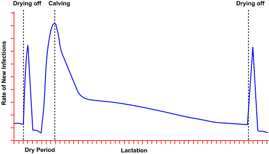
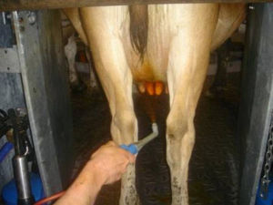
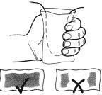
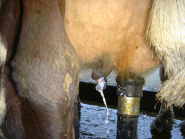
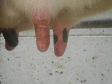
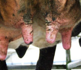
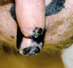

Epidemiology
Bovine mastitis is a multi-factorial and complex disease, resulting from interaction between cows, microorganisms and the environment, with farmers playing a key part in its spread and its control.
Causes of Mastitis
Many bacteria, yeasts, viruses and fungi have been isolated from bovine mammary glands but only a small group have been confirmed to cause elevated somatic cell counts and mastitis. Mastitis-causing organisms are primarily bacteria. Most intramammary infections result from pathogenic bacteria entering the udder through the teat canal.
Mastitis-causing bacteria can be divided into two groups:
Contagious Pathogens
- Found in infected mammary glands.
- Spread from cow to cow.
- Do not survive in the environment for long periods.
Environmental Pathogens
- Found in the environment.
- Gain accidental access to the udder.
- Survive in the environment for longer periods.
The difference between contagious and environmental pathogens is not absolute since some environmental pathogens have been shown to persist in the mammary gland throughout the dry period and beyond. Occasional transmission from cow to cow has been demonstrated for Streptococcus uberis and Streptococcus dysgalactiae.
Dynamics of intramammary infections
Average prevalence of infection in a herd = Numbers of cows infected x Average duration of each infection. The average prevalence of infection is influenced by the new infection rate and the infection elimination rate.
Mastitis Infection Rate
The mastitis infection rate is generally highest during the dry period, high in early lactation and decreases as lactation advances. Without dry cow therapy, the rate increases dramatically the first two weeks of the dry period and again during the two weeks before calving. With each successive dry period, the prevalence of dry period intramammary infections increases.

Timing of new intramammary infections during the lactational cycle without dry cow therapy
Source: Journal of Dairy Science 64:1431, 1981
Duration
Most environmental streptococcal intramammary infections are present less than 30 days, but about 20% become chronic and persist more than 100 days. About 40% of the infections present during lactation are eliminated spontaneously. Contagious mastitis caused by Staphylococcus aureus is often chronic and subclinical.
Epidemiology - Contagious Mastitis
Organisms causing contagious mastitis come from the mammary glands of cows already infected with such bacteria. The teat skin of cows may also harbour these bacteria when it has cracks, chaps and sores.
Contagious Mastitis Pathogens
Major Pathogens i.e. can cause clinical as well as subclinical mastitis.
Staphylococcus aureus
Common
Streptococcus agalactiae
Rare
Streptococcus dysgalactiae
(can also be environmental)
Common
Mycoplasma (mainly bovis)
Not detected
Nocardia sp
Rare
Minor Pathogens i.e. usually cause sub-clinical mastitis.
Coagulase negative Staphylococci
Common
Coryneforms
Common
New intramammary infections with contagious bacteria occur only during lactation.
Infections caused by these bacteria may be clinical or sub-clinical.
Milk contaminated with these bacteria is the most important vectors. Transmission occurs mainly at milking. Unhygienic or poor milking technique, faulty machines and particularly contaminated liners play a significant role in transmission. Contagious mastitis pathogens may contaminate the teat canal, teat skin lesions and rarely udder skin by contact with contaminated milk from an infected quarter/cow to an uninfected quarter/cow during milking or shortly afterward. They can be passed on by teat cup liners, other milking equipment and milkers’ hands. Viable pathogens can be recovered from contaminated liners for 6-8 cows after milking an infected cow. Irregular vacuum fluctuations can cause droplets of milk that contain bacteria to impact against the teat end during milking. These droplets may penetrate the teat canal and introduce infection. Irregular vacuum fluctuations may result from insufficient vacuum reserve, inadequate milk line diameter or faulty vacuum regulators. They frequently are associated with milking cup slip, rough placement and removal of milking clusters that allow excessive air intake.
Under-milking can leave milk containing bacteria in the udder which increases the chances of mastitis developing. Under-milking can be due to faulty machine function, teat end damage or failure of milk let-down as well as insufficient milking time. Uneven milking can be caused by poor cluster alignment, effectively resulting in under-milking of one or more quarters.
Teat end lesions are important in the epidemiology of contagious mastitis as they serve as reservoir for contagious pathogens and also compromise the teat canal's natural defence against infection. Teat end lesions are commonly seen as result of infectious agents (bacteria, viruses), but will also occur due to non-infectious causes (weather conditions, teat disinfecting agent, milking machine faults or maintenance, etc). Staphylococcus aureus can survive on teat skin for long periods without causing intramammary infection. Faulty milking machine function is a potent cause of teat end damage, particularly high vacuum, excessive over-milking, and damaged rubber-ware.
|
 |
 |
Teat disinfection using properly prepared and applied teat spray or teat dip to the entire surface of each teat after each milking will reduce the spread of these infections. Post milking teat disinfection reduces bacteria on teat skin and also reduces the incidence of teat lesions which harbour mastitis pathogens, particularly Streptococcus dysgalactiae and staphylococci.
Added emollient will help maintain teat skin condition and prevent sores and cracks that harbour mastitis causing bacteria.

Teat end lesions
Photo: Kiro R Petrovski 2005

Photosensitisation
Photo: Kiro R Petrovski 2005

Teat chaps
Photo: Kiro R Petrovski 2004

Black pock
Photo: Mel Eden 2003
Epidemiology - Environmental Mastitis
The source of these organisms is the environment. Many of these organisms reside on the cow's skin or are faecal contaminants. Contamination of teat ends is a major predisposing factor in the development of environmental mastitis.
Environmental Pathogens
The most important under NZ conditions:
Streptococcus uberis
Common
Steptococcus dysgalactiae
(can also be contagious)
Common
Escherichia coli
Rare in pasture systems
Klebsiella
Rare in pasture systems
Pseudomonas
(mainly aeruginosa)
Rare
Enterobacter spp
Rare in pasture systems
Enterococcus spp
Common
Archanobacter pyogenes
Rare
Infection with these organisms is predisposed to by wet and muddy conditions.
New infections with environmental bacteria are most common from three weeks before to about six weeks after calving and again in the first three weeks after drying off. Streptococcus uberis is responsible for about 70% of mastitis cases detected following calving and is the most common cause of mastitis in early lactation in New Zealand.
A keratin "teat plug" often protects the udder from infection during the dry period, however this takes some time to form and in some cows (often the fast milkers with a large teat orifice) it never completely forms. Whilst this plug is incompletely developed, the dry cow is susceptible to infection with these bacteria.
Sixty percent of environmental infections become clinical infections.
In herds with effective control of contagious mastitis, environmental organisms are the most common cause of clinical infections.